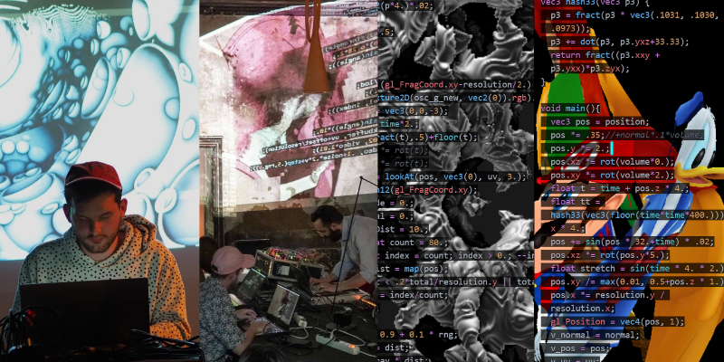

Welcome to Shaderland, where dreams become real time.
Hi👋 I'm Leon Denise. I'm using video games tools to explore and experiment digital playgrounds. My work is about image filters, glitch effects, fractal shapes, particles systems behaviours and mathematical sculptures. I'm a freelancer shader coder and technical artist, working mostly with creative studios on VR standalone headsets, interactive installations, playful devices, immersive projections and new media movies.
I participate in the organization of the Cookie Collective which gathers digital artists involved in real-time creation. This covers video games, art installations, video mapping, demoscene, live coding, etc. We collaborate with festivals and institutions to promote live coding audio visual performances and playful alternative installations.
I'm part of an artist duo with Dorian Rigal: Neon Minuit. We capture pieces of reality to stage them in our playground: the virtual world. Our artistic approach is inspired by scientific experimentation and serendipity. Our work is about immersive interactive digital art and representation of volumetric content data.
Inspired by Shader Showdown from demoparty Revision and live coders like Jan Scheurer and Aurelien Prunier, I've started live coding shaders with members of the Cookie Collective, Jonathan Giroux, Florine Fouquart, NuSan and many other. Recently I've been partipating mostly in algoraves with musician as live coding VJ with azertype, afalfl, julescipher, z0rg, vjblind, ralt144mi, bubobubo.
Writing shader code is my main activity. The video below showcase some of my shader toys, which some are raymarching fractal shapes and other are feedback simulations.
I've worked on several digital art projects in collaboration wither other talented artists, designers, makers and coders.
Here is a list showing some of them:
Miroir Arcade is an interactive multiplayer projection controlled by a cluster of handcrafted gamepads. The visitor sees their body projected into the digital space through a Kinect camera. Mysterious hanging boxes in space can generate spectacular effects. By sharing the controls, the participants manipulate buttons, potentiometers and switches to discover all the distorting filters.
Reflection of a computer tower whose screen facade opens like a portal, inviting the viewer to approach the heart of the machine. The duo of the screen and the central unit become one. It forms a digital sculpture on which content calculated in real time is displayed. Generated by graphic code, the screen projects fractal animations.
Visual show with real time animation effects for Frequency electronic dance battle show at Gaite Lyrique.
My profession is technical artist, which means I'm working with designers and developpers to build complex interactive visual effects. I'm often called to work on VR standalone headsets projects, where shader knowledge can leverage performance constraints to expand artistic limits.
Below are selected projects I've worked on:
Award-winning GOLIATH: PLAYING WITH REALITY is a 25-minute animated VR experience about schizophrenia, gaming and connection. Through mind-bending animation, GOLIATH: PLAYING WITH REALITY explores the limits of reality in this true story of so-called 'schizophrenia' and the power of gaming communities.
On the Morning You Wake uses innovative documentary storytelling and virtual production techniques to viscerally recreate the lived experiences of people who, for 38 minutes, had to react and make impossible decisions in the face of nuclear violence.
The redaction of this website is still in progress, more projects will be shown soon.